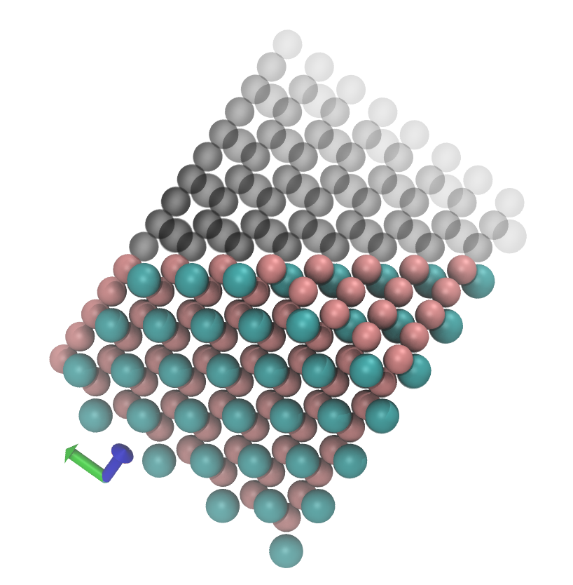
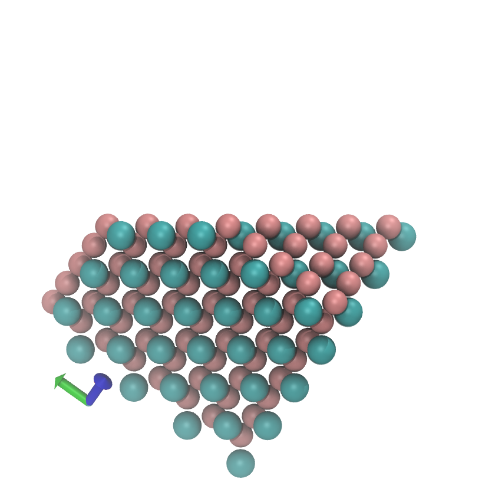

Geometry of 3D crystals - real space¶
After those fairly formal definitions we can finally define our crystal as
so this is a set of lattice points - at each lattice point we add the basis to get the crystal.

here is some flock wall paper
- can you see the lattice and the basis?
Real 3D lattices¶
it turns out that there are only 14 types of lattice possible in normal 3D space. They are called Bravais lattices after Auguste Bravais who characterised them.

The most friendly are cubic, tetragonal and then orthorhombic - they all have cell vectors that are all at $90^o$ to each other.
Cubic lattices have all three lengths the same, tetragonal 2, and orthorhombic they all differ.
Cubic lattices come in three flavours: simple, body centred and face centred.
Symmetry - space groups¶
there is a powerful branch of mathematics called group theory that classifies relations between objects. In particular many atoms in a crystal are related to each other by 'symmetry operations' reflections, rotations etc. It is possible to specify for a crystal which of these are present (they will depend on the basis and the lattice in general). Then only a subset of the total atoms need be fully specified.
A crystals symmetry is specified by its 'space group', which is a list of the symmetry operations that exist for that crystal.
This can be immensely useful, especially in crystallography, but we won't do more than mention the concept here.
Real Crystals¶
Sodium Na
Lattice = Cubic-I (body centred cubic)
Basis = Na at (0,0,0)
CsCl
Lattice = Cubic-P
Basis = Cs at (0,0,0), Cl at (1/2,1/2,1/2)
NaCl
Lattice = Cubic-F (face centred cubic)
Basis = Na at (0,0,0), Cl at (1/2,1/2,1/2)
There are quite a few programs for visualising 3D structures.
This lets you look at Zeolite structures (note, Double tap to stop rotation in the previous link.)
Geometry of 3D crystals - reciprocal space¶
here is some flock wall paper
- can you see the lattice and the basis?
1D¶
In 1D we found that certain k-vectors were equivalent for the electrons or phonons.
We found that both electrons and vibrations behaved as waves in the ideal 1D lattice of atoms spaced by a 'lattice constant' of $a$.
In particular we found that our solutions would be equivalent if
$k_1 = k_2 + G_m$, where $G_m = 2 \pi m / a: m \in \mathbb{Z}$
Because we sought solutions of the form
$$ e^{ikx_n} = e^{ikna}: n \in \mathbb{Z} $$
we can show that $k \to k + G_m$ doesn't change our solution.
Definition of the Reciprocal Lattice¶
What could this mean. The direct lattice points are integer multiples of the lattice vectors
$\mathbf{R} = n_1 \mathbf{a_1} + n_2 \mathbf{a_2} + n_3 \mathbf{a_3}$
where $\mathbf{a_1},\mathbf{a_2},\mathbf{a_3}$ are the lattice vectors and $n_1, n_2, n_3$ are integers.
Now we can satisfy our definition, if every $\mathbf{G}$ is formed from an integer sum of reciprocal vectors, $\mathbf{b}_i: i =1,2,3$, that satisfy
$$ \mathbf{a}_i \cdot \mathbf{b}_j = 2 \pi \delta_{ij} $$
where $\delta_{ij}$ is the Kronecker delta.
Just mechanically this will work if we take
$$ \begin{align} \mathbf{b}_1 = 2 \pi \frac{\mathbf{a}_2 \times \mathbf{a}_3}{\mathbf{a}_1 \cdot (\mathbf{a}_2 \times \mathbf{a}_3)} \\ \mathbf{b}_2 = 2 \pi \frac{\mathbf{a}_3 \times \mathbf{a}_1}{\mathbf{a}_1 \cdot (\mathbf{a}_2 \times \mathbf{a}_3)} \\ \mathbf{b}_3 = 2 \pi \frac{\mathbf{a}_1 \times \mathbf{a}_2}{\mathbf{a}_1 \cdot (\mathbf{a}_2 \times \mathbf{a}_3)} \\ \end{align} $$
Why is the reciprocal lattice useful?¶
- it is directly linked to a spatial fourier transform of the real lattice, so often of use in analysing wave motion in crystals.
- Reciprocal lattice vectors are directly linked to the spacings between planes of atoms in the crystal, which in turn can be measured using diffraction experiments.
Next week we will talk about imaging in reciprocal space (AKA diffraction)
Seeing surfaces in real space: how scanning probe microscopes work.¶
What is a surface?¶

What is a surface?¶

What is a surface?¶

What is a surface?¶

What is a surface?¶

What is a surface?¶
What is a surface?¶
What is a surface?¶

Surface energy¶
Energy of a surface depends on:
- the number of bonds cut
- similar idea to surface tension
- is there a dipole moment, unbalanced charges cause divergent energy cost as the surface grows.
Aside: Crystal Shape?¶
 |

|
Scanning probes¶
 |
Atomic force microscopy (left) and Scanning Tunnelling microscopy (right) |
 |
- Local measurements.
- Invasive?
- Ambient or liquid conditions?
Seeing surfaces¶
How do SPMs get such high resolution imaging?
The trick is a highly non-linear signal
- STM the signal drops off exponentially (tunnelling current - like the hopping integral we saw in tightbinding model?)
- AFM in attractive regime the signal drops off with large power of distance ($r^{-3}$ to $r^{-6}$)
- AFM in repulsive regime the signal drops off exponentially (Pauli-repulsion)
AFM¶
Model the cantilever oscilations: $$ \ddot{z} + \omega_{0}^{2} \alpha \dot{z} + \omega_0^2 z - \frac{\omega_0^2}{k}F(z) = \frac{\omega_0^2}{k}F_{ext} $$
work in constant amplitude and frequency change $$ \ddot{z} + \omega_0^2 z - \frac{\omega_0^2}{k}F(z) = 0 $$
motion is periodic, we can find a solution of the form $$ \frac{\omega}{\omega_0}^2 = \frac{1}{\pi k A_1} \int_0^{2 \pi} F(z) \cos (\tau) d\tau $$
Hofer, Werner A., Adam S. Foster, and Alexander L. Shluger. "Theories of scanning probe microscopes at the atomic scale." Reviews of Modern Physics 75.4 (2003): 1287.
Macro vs Nano¶
|
|

|
cantilever is macroscopic, tip apex is nanoscopic
experiment measures frequency change due to all interactions - macro + nano
Experiment: Macroscopic effects¶
removed empirically by subtracting force from averaged long range scan data over several surface locations

|
K Miyazawa, N Kobayashi, MW, AL Shluger, K Amano, T Fukuma, Nanoscale 8, 7334 (2016)
Nottingham Nanoscience group's papers as PDFs
Phil is an extremely good guitarist;)
Modelling SPMs¶
Need a forcefield for classical calculations - bonds, angles, torsions, charges etc for all atoms
Or use Quantum Mechanical calculations (Density Functional Theory (~1000x slower) than forcefield)
For STM we need the electron density (LDOS), we need Quantum Mechanics
For AFM we need the to calculate the force on a tip model on a 3D grid (1000s of calculations)
Hofer, Werner A., Adam S. Foster, and Alexander L. Shluger. "Theories of scanning probe microscopes at the atomic scale." Reviews of Modern Physics 75.4 (2003): 1287.
Modelling SPMs¶
Need a forcefield for classical calculations - bonds, angles, torsions, charges etc for all atoms
These are similar to the empirical potentials we talked about in week 1.
Using classical potentials to 'pull' molecules onto a KCl surface.
Gaberle, J., Gao, D. Z., Watkins, M. B., & Shluger, A. L. (2016). Calculating the entropy loss on adsorption of organic molecules at insulating surfaces. The Journal of Physical Chemistry C, 120(7), 3913-3921.
Crystal Structure¶
Crystaline materials periodically repeat
Gaps between atoms are of the order 0.1 nanometers = $10^{-10} \text{m} = 1 \mathring{\text{A}}$
|

Light¶
As you know from interferometer experiments - if you have a grating of similar dimensions to the dimensions of light waves, you get diffraction.
Looking at the wavelengths of light

we see that X-rays are the appropriate rays to diffract from a crystal.
Bragg condition¶
In the simplest case we are looking for the conditions of constructive interference between diffracted rays in the crystal.
The extra path length should be a multiple of the wavelength $2d \sin \theta =n\lambda $

A family of lattice (crystal) planes is an infinite set of equally spaced parallel planes, which all together contain every point of the lattice.
where $\mathbf{G_{min}}$ is the minimum length reciprocal vector in this normal direction.
Proof of last statement
Consider a set of points $\mathbf{R}$ such that for some integer $m$
$$ \mathbf{G} \cdot \mathbf{R} = 2 \pi m $$Which defines an infinite series of planes perpendicular to $\mathbf{G}$.
Since $e^{i \mathbf{G} \cdot \mathbf{R}} = 1$ we know that every lattice point will be a member of one of these planes, from our definition of $\mathbf{G}$.
Now the spacing between two of these planes will be given by
$$ \mathbf{G} \cdot (\mathbf{R}_{m+1} - \mathbf{R}_m) = 2 \pi $$so in the direction parallel to $\mathbf{G}$ the spacing, $d$, is given by
$$ d = \frac{2 \pi}{|\mathbf{G} |} $$you can argue that taking the minimum length $\mathbf{G}$ will then still contain all the lattice points and no extra planes that do not cut lattice points. Then
$$ d = \frac{2 \pi}{|\mathbf{G}_{min} |} $$gives the spacing of these lattice planes.
As a reciprocal lattice vector is an integer multiple of the reciprocal lattice vectors, we can label them by the integers, which then will also index the planes.
Miller Indices¶
A family of lattice planes is determined by three integers h, k, and ℓ, the Miller indices. They are written $(hkl)$, and denote the family of planes orthogonal to $h \mathbf {b_{1}} +k\mathbf {b_{2}} + l \mathbf {b_{3}} $, where $ \mathbf {b_{i}} $ are the basis of the reciprocal lattice vectors.
By convention, negative integers are written with a bar, as in 3 for −3. The integers are usually written in lowest terms, i.e. their greatest common divisor should be 1.
Miller indices were introduced in 1839 by the British mineralogist William Hallowes Miller. The method was also historically known as the Millerian system, and the indices as Millerian,[2] although this is now rare.
The Miller indices are defined with respect to any choice of unit cell and not only with respect to primitive basis vectors, as is sometimes stated.

There are also several related notations:
the notation {hkl} denotes the set of all planes that are equivalent to (hkl) by the symmetry of the lattice.
In the context of crystal directions (not planes), the corresponding notations are:
[hkl], with square instead of round brackets, denotes a direction in the basis of the direct lattice vectors instead of the reciprocal lattice; and similarly, the notation
Another way to look at it is that the planes cut the axes at $[a/h, 0, 0], [0, a/k, 0], [0,0,a/l]$